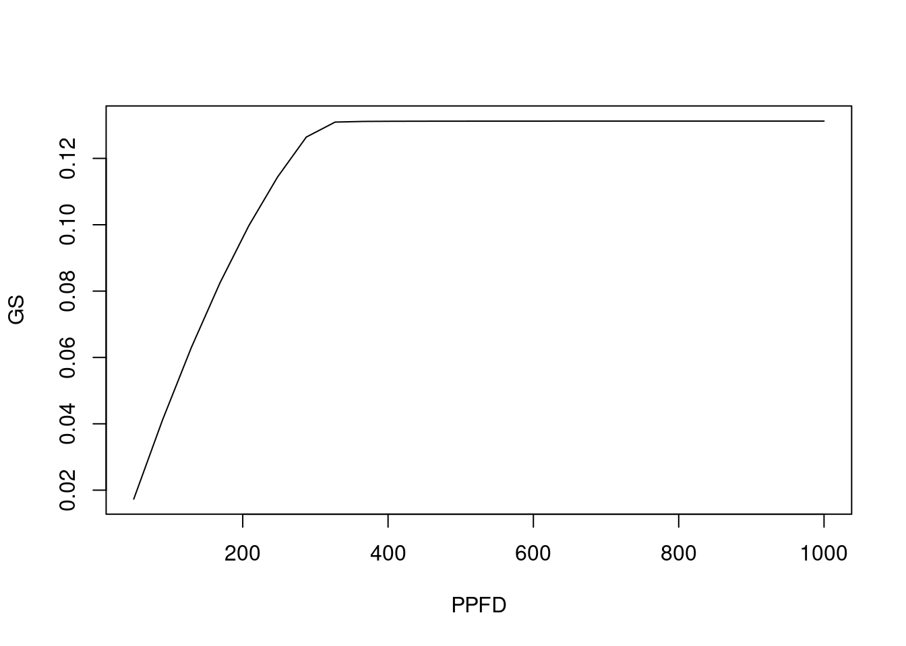
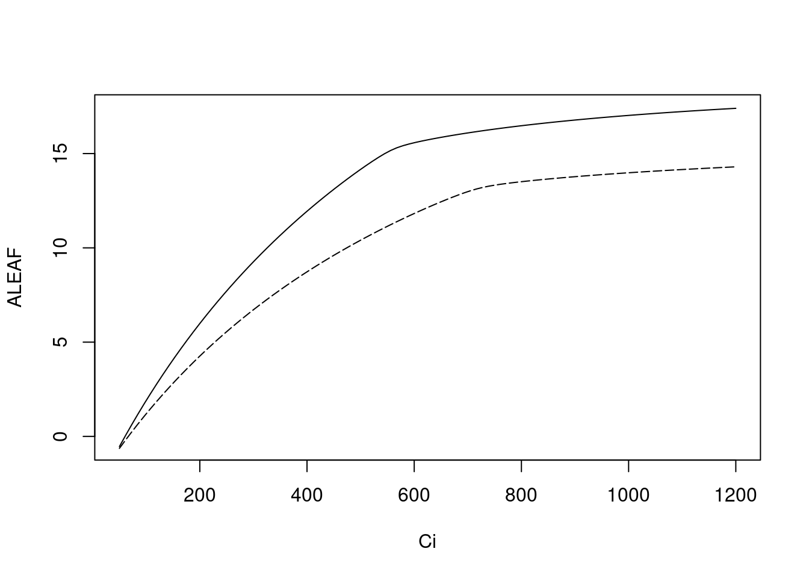

22 气孔导度模型的拟合
在暂时还没时间多年没时间整理的情况下，先简单记录一下基本操作。
22.1 plantecophys 气孔导度相关函数
22.1.1 fitBB 函数
参数的意义:
- data：待分析的数据文件。
- varnames：注意，函数默认数据为 6400 格式，因此 6800 的数据文件要按照上文的参数修改。 相对湿度只有在使用 BallBerry 时才需要输入。
- gsmodel：上述三个模型之一。
- fitg0：默认不计算g0，若需要，改为TRUE。
代码示例：
Code
Result of fitBB.
Model : BBOpti
Both g0 and g1 were estimated.
Coefficients:
g0 g1
0.326 -0.992
For more details of the fit, look at summary(myfit$fit)
To return coefficients, do coef(myfit).
(where myfit is the name of the object returned by fitBB)
22.1.2 fitBBs 函数
如果我们有多个物种或分组的数据，那么使用 fitBBs 则可以快速拟合多条曲线的数据。我们先整合两次的数据，然后来查看一下运行结果：
Code
aci01 <- read.csv("data/aci01.csv")
aci01 <- subset(aci01, Obs > 0)
multiBB <- data.frame(
A = c(aci$Photo, aci01$Photo),
GS = c(aci$Cond, aci01$Cond),
CO2S = c(aci$CO2S, aci01$CO2S),
VPD = c(aci$VpdL, aci01$VpdL),
RH = c(aci$RH_S, aci01$RH_S),
species = c(rep("species1", length(aci$Photo)),
rep("species2", length(aci01$Photo)))
)
mod2 <- fitBBs(
multiBB,
group = "species",
varnames = list(
ALEAF = "A",
GS = "GS",
VPD = "VPD",
Ca = "CO2S",
RH = "RH"
),
gsmodel = "BallBerry",
fitg0 = TRUE
)结果为：
Code
coef(mod2)| group | g0 | g1 |
|---|---|---|
| species1 | 0.3263885 | -0.1734554 |
| species2 | 0.0515873 | -0.0218842 |
22.2 photosynthesis 气孔导度相关函数
22.2.1 无分组模型的实现过程
内容与上面 的重复，这里不在运行，仅列出代码。
读取数据：
Code
library(photosynthesis)
df <- read.csv("data/A_Ci_Q_data_1.csv")BallBerry 模型需要相对湿度，而 LI-6800 的相对湿度数据实际上是转换为百分数后的数据，因此需要处理一下，然后这个函数的方便之处是，它可以一次拟合出所有的模型来：
Code
df$RH <- df$RHcham / 100
fits <- fit_gs_model(
data = df,
varnames = list(
A_net = "A",
C_air = "Ca",
g_sw = "gsw",
RH = "RH",
VPD = "VPDleaf"
),
model = c("BallBerry",
"Leuning",
"Medlyn_partial",
"Medlyn_full"),
D0 = 3
)函数的参数其实都比较简单，如果对非线性拟合不满意，也可以传入 nlsLM 的参数。
结果的查看
fit_gs_model 结果有两个水平，第一层 list 是拟合模型，第二层则是模型相关的参数、图形等，可以通过位置查看：
Code
fits[[1]][1]
fits[[1]][2]
fits[[1]][3]也可以通过名称查看：
Code
fits$BallBerry$Parameters
fits$Leuning$Graph
fits$Medlyn_partial$Parameters
fits$Medlyn_full$Parameters22.2.2 分组模型的实现
分组数据处理起来也比较方便，例如下面以光强为分组，photosynthesis 提供了两个方便的函数，帮助进行分组数据的操作，fit_many 用于选择函数用于分组数据，compile_data 用于将 list 结果转为 dataframe：
数据的查看比之前又多了一个水平，例如 750 光强下的数据：
Code
fits[["750"]][["Medlyn_partial"]][["Parameters"]]这里转换过程分两部，首先是将所有的参数转为 list 形式，转换对象是 1，也就是第一个模型 BallBerry。然后再将这个 list 进行一次转换，不同分组的参数 Parameters（顺序可参考未分组数据的结果）：
Code
bbmods <- compile_data(data = fits,
output_type = "list",
list_element = 1)
bbpars <- compile_data(data = bbmods,
output_type = "dataframe",
list_element = 2)
bbpars$ID <- as.numeric(bbpars$ID)
plot(g0 ~ ID, bbpars)最后展示的图形是不同光强下，拟合的截距的差异。多个图形也可以使用这种方式转换，不过存储的类型最好是 list（存储的是 ggplot2 对象的类）。例如 vignette 使用下面的方式查看第三幅图的结果。
Code
graphs <- compile_data(data = bbmods,
output_type = "list",
list_element = 3)
graphs[[3]]22.3 光合最优气孔导度耦合模型
Cowan 和 Farquhar (1977) 关于最优气孔导度的描述概括如下： 最优气孔行为理论认为气孔的最优化行为，指的是在某一时间段内， 最大化的进行光合碳固定的同时最小化的进行蒸腾作用，也就是说，对于一定的水分消耗，得到最大化的光合碳固定。即使得：
A - \lambda E \tag{22.1}
最大化，其中 \lambda 是临界水分利用效率，也即植物损耗单位水分的 C 生产量，单位一般为 mol \: CO_2 \cdot mol^{-1} H_2O，可通过光合速率和蒸腾速率的比值计算。plantecophys 包含了相关的函数来处理。
22.3.1 FARAO 函数
FARAO 函数用于找到最大化 A - \lambda E 解的** Ci **值，这里是利用数值解的形式求解方程。
其参数同 fitaci 和 Photosyn，在此不多做介绍，FARAO 使用的是 Cowan 和 Farquhar (1977) 的方法得到最优化的 Ci 值, FARAO2 则更简单或可能更稳定，利用 Buckley 等 (2014) 的方法来计算, Medlyn 等 (2011) 的方法是这个数值解的近似值。
22.4 光合气孔导度耦合模型
Remko A. Duursma (2015) 对于气体交换耦合模型的简述如下：
- 对于 FvCB 模型有：
A_n = min(A_c, A_j)-R_d \tag{22.2}
- 在假定 gm 为恒定的前提下：
C_c = C_i - \frac{A_n}{g_m} \tag{22.3}
- 根据 Ficker 定理
A_n = \frac{g_s}{1.6}(C_a - C_i) \tag{22.4}
以及 BallBerry 气孔导度模型 g_s = g_0 + g_1 \frac{A_n}{C_a} f(D) \tag{22.5}
整合公式 公式 22.2, 公式 22.3, 公式 22.4 和 公式 22.5 后得到气体交换的耦合模型，气体交换耦合模型有很多更大尺度上的应用，例如 R. A. Duursma 和 Medlyn (2012) 和 wang1998a，可用于预测 An，gs 和蒸腾速率对主要环境驱动因子的响应（除土壤水分），并包含了主要的叶片性状（g1，Vcmax, Jmax, Rd 以及他们的温度依赖性）。
22.4.1 Photosyn 函数
Photosyn 为耦合的光合–气孔导度模型，基于 Farquhar 光合模型和 Ball-Berry 气孔导度模型。
Code
Photosyn(VPD = 1.5, Ca = 400, PPFD = 1500,
Tleaf = 25, Patm = 100,RH = NULL,
gsmodel = c("BBOpti", "BBLeuning",
"BallBerry", "BBdefine"),
g1 = 4, g0 = 0, gk = 0.5, vpdmin = 0.5,
D0 = 5, GS = NULL, BBmult = NULL,
alpha = 0.24, theta = 0.85, Jmax = 100,
Vcmax = 50, gmeso = NULL, TPU = 1000,
alphag = 0, Rd0 = 0.92, Q10 = 1.92,
Rd = NULL, TrefR = 25, Rdayfrac = 1,
EaV = 82620.87, EdVC = 0, delsC = 645.1013,
EaJ = 39676.89, EdVJ = 2e+05, delsJ = 641.3615,
GammaStar = NULL, Km = NULL, Ci = NULL,
Tcorrect = TRUE,returnParsOnly = FALSE,
whichA = c("Ah", "Amin", "Ac", "Aj"))
Aci(Ci, ...)因为是光合气孔导度模型的耦合，故而参数与之前的函数相同，参见 sec. 22.1.1 和 章节 15 部分的内容。
Photosyn 使用举例
Code
library(plantecophys)
# 仅使用下面几个参数运行模型
#（其他参数使用默认值）
# 利用已测量或计算的参数
Photosyn(VPD=2, g1=4, Ca=500) Ci ALEAF GS ELEAF Ac Aj Ap Rd VPD Tleaf
1 369.3981 14.19466 0.1706377 3.412753 15.12654 17.03685 1000 0.92 2 25
Ca Cc PPFD Patm
1 500 369.3981 1500 100Code
Figure 22.1 显示了不同 VPD 下的光合速率。
Code

Code

?fig-ppfd 显示不同 Ci 下的光合速率。
Code
# 找出CO2需求和供给的交叉点
# 设定部分参数
gs <- 0.2 # 对水的气孔导度
Ca <- 400 # 外部CO2
gctogw <- 1.57 # 转换系数
gc <- gs / gctogw # 对 CO2 的气孔导度
# 需求曲线
p <- Aci(seq(60,500,length=101), Ca=400)
# 提供气孔导度及交叉点
g <- Photosyn(GS=gs, Ca=Ca)
# 交叉点可视化
par(yaxs="i")
with(p, plot(Ci, ALEAF, type='l',
ylim=c(0,max(ALEAF))))
with(g, points(Ci, ALEAF, pch=19, col="red"))
abline(gc * Ca, -gc, lty=5)
legend("topleft", c(expression(
"Demand:"~~A==f(C[i])),
expression("Supply:"~~A==g[c]*(C[a]-C[i])),
"Operating point"),
lty=c(1,5,-1),pch=c(-1,-1,19),
col=c("black","black","red"),
bty='n', cex=0.9)
Figure 22.2 需求与供给的关系。
22.4.2 PhotosynEB 函数
使用同 Photosyn，只不过使用能量平衡法来计算叶温。
目前版本尚存在bug，不能直接提供 GS 来计算，否则会出现未知错误。
22.4.3 PhotosynTuzet 函数
同样为光合气孔导度耦合模型，只不过基于 Tuzet, Perrier, 和 Leuning (2003) 的气孔导度模型，现将其描述如下：
g_{co2} = g_0 + \frac{a A}{C_i - \Gamma} f_{\Psi v} \tag{22.6}
其中 gco2 为对 CO2 的气孔导度， g0 是残余导度（residual conductance）(在补偿点时限制 gCO2 的值）， A 为光合速率，Ci 为胞间二氧化碳浓度，\Gamma 为 CO2 补偿点，a 是经验系数。
一个根据经验的逻辑方程用于描述气孔对水势的敏感性：
f_{\Psi v} = \frac{1 + exp(s_f \Psi_f)}{1 + exp(s_f(\Psi_f - \Psi_v))} \tag{22.7}
\Psi_v 是指叶片水势，\Psi_f 是参比势能， 该方程假设在水势接近于 0 时，气孔对叶片水势不敏感，并且气孔随着 \Psi_v 的下降快速关闭。\Psi_f 和 s_f (曲线形状参数) 依赖于不同物种的形态学适应以及生长过程中所处的环境。
PhotosynTuzet 的参数
除 Tuzet, Perrier, 和 Leuning (2003) 模型中使用的参数外，其他参数都继承了 Photosyn 的参数
Code
PhotosynTuzet(g1 = 8, Ca = 400, psis = 0,
kl = 2, sf = 3, psif = -2,
...)- g1：斜率参数，要远比
fitBB中的大。 - Ca：外界大气 CO2 浓度
- psis，土壤水势（Mpa）。
- kl：Leaf-specific hydraulic conductance（叶片导水参数 (mmol \cdot m^{-2} \cdot s^{-1} \cdot MPa^{-1})，叶片蒸腾量、叶片面积及叶片水势计算）。
- sf：曲线形状参数。
- 在气孔导度为最大值 50% 时的叶片水势。